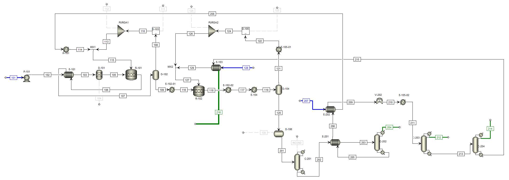

Aspen Plus V14
Modelo UNIFAC
ETSII UPM
Diseño y Simulación de Planta de Biodiésel HVO
Modelización rigurosa del hidrotratamiento catalítico de aceite de cocina usado (UCO) e hidrógeno verde. Integración de reactores de hidrodesoxigenación (HDO) e isocraqueo, recuperación de H₂ mediante PSA y tren de fraccionamiento a vacío.

Clic para inspeccionar corrientes, presiones y balances

Clic para ver simulación y convergencia RadFrac
Nomenclatura normalizada: bombas P-101/P-102, reactores catalíticos R-101/R-102, flashes D-102/D-104 y tren de vacío C-203/C-204 con eyectores de vapor J-201/J-202.
Capacidad Diésel HVO
395,99 Tm/d
Sobre 500 Tm/d de UCO alimentadas
Pureza en Producto
99,5 % p/p
Fracción de parafinas e isoparafinas C17-C18
Rendimiento Global
84,23 %
76,86% HVO + nafta, queroseno y GLP
Exceso de Hidrógeno
+31 %
Garantiza conversión completa (>97%) en R-101